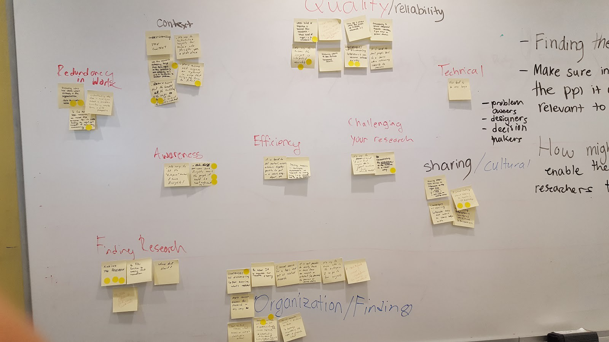
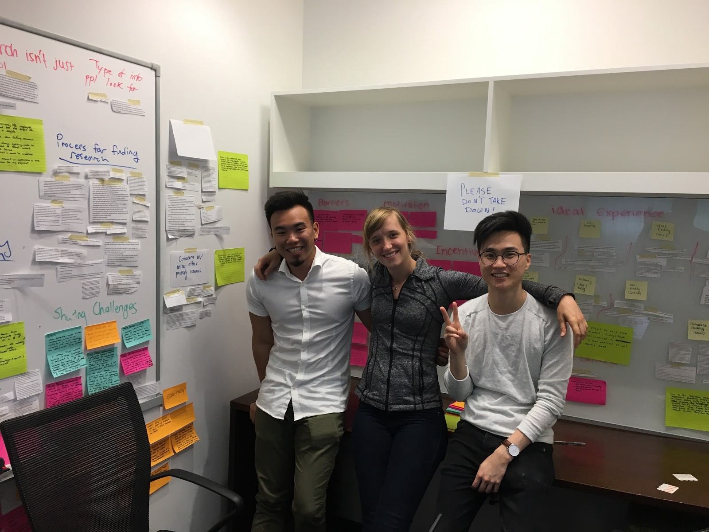
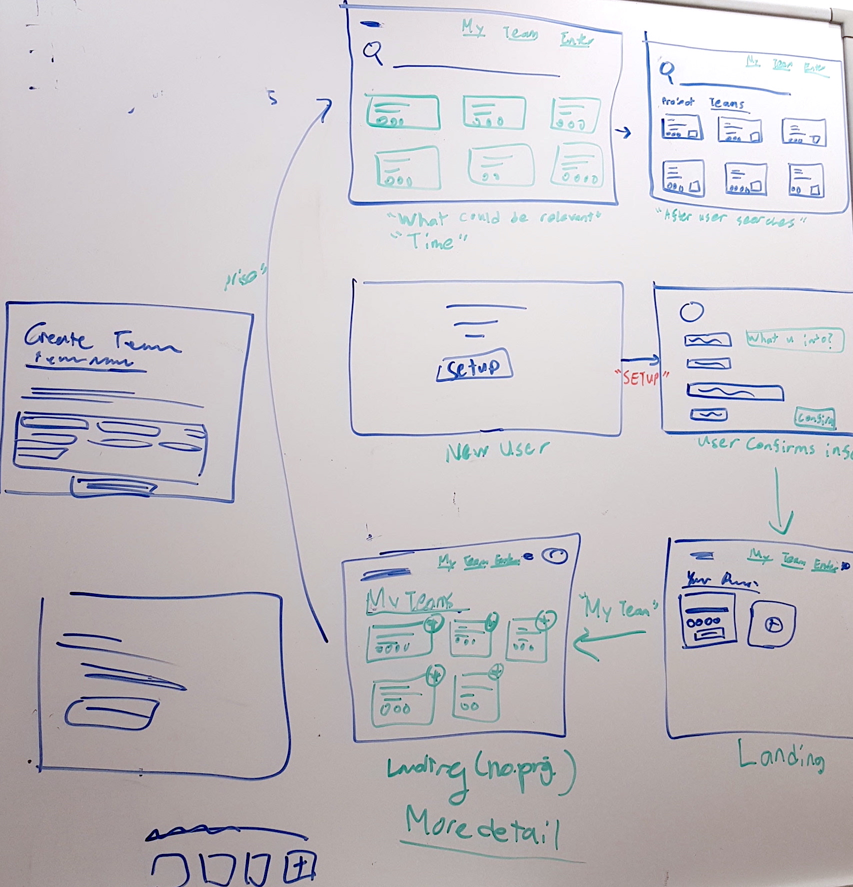
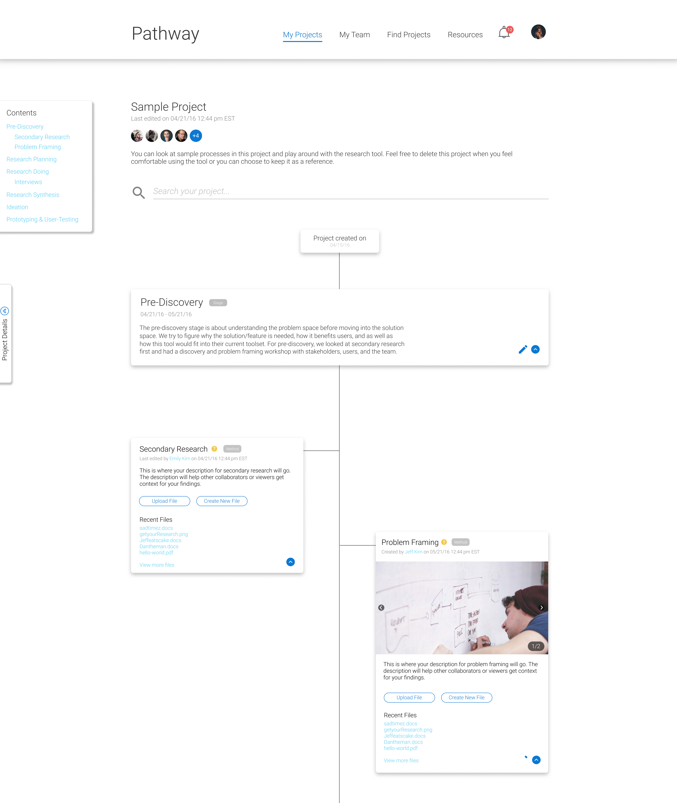
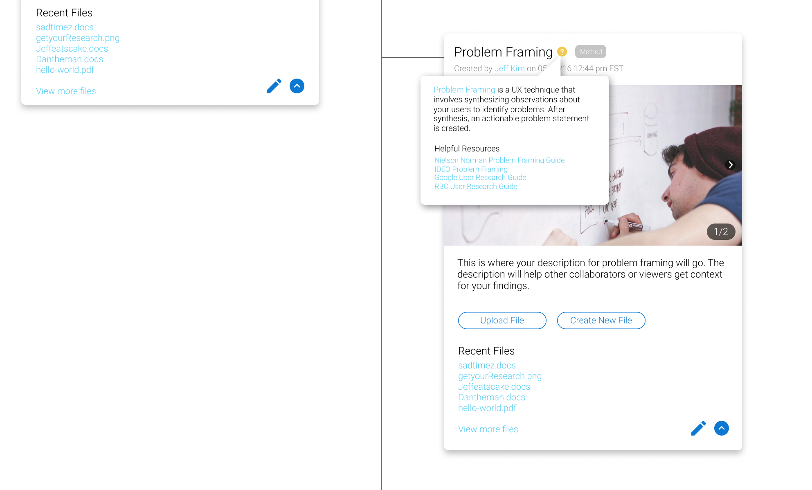
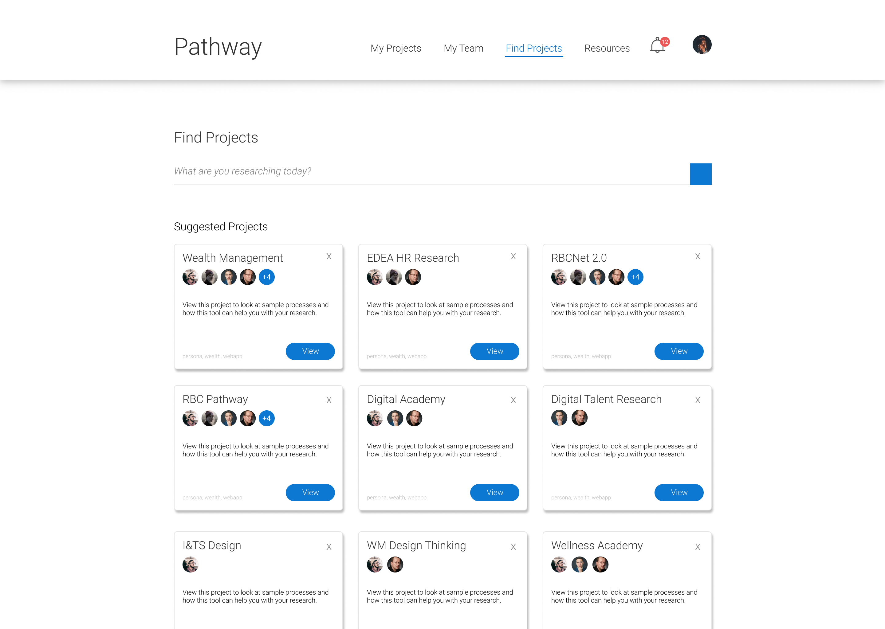

During my internship at RBC Royal Bank, I was given the opportunity to lead a project from start to finish with other fellow co-op students, Daniel Kim and Emily MacGowan. The problem that we were given by our managers is that at RBC, many employees do not share their research findings and we wanted to figure out why that is happening and how we can solve that problem.
Pre-Discovery
During this phase, we wanted to understand the problem space before moving into the solution space. For our pre-discovery research, we wanted to understand:
- The possible users and stakeholders and understand their needs
- Documented the potential impact of success with our project
- The business goals associated with this problem space i.e. what value does this research add to RBC and why?
Once we felt that we did enough pre-discovery research we moved into problem framing phase to give us a starting point for our research.
Problem Framing
The purpose of this stage of is to unpack the problem space and craft a 'How might we'(HMW) statement with the team and stakeholders. At this stage, we hosted a problem framing workshop with our team (Employee Digital Experience Architecture). We started off our workshop by introducing the context of the project, goals and our pre-discovery research. Afterwards we gave the participants the following seed question:
“What might be the biggest challenge when sharing research/insights and accessing existing research/insights?”
The participants were asked to write down some of the challenges they face in their day-to-day lives at work on sticky notes. Afterwards we clustered the stickies into common themes and the participants were given sticky dots to vote for which challenges were most important to solve for. The challenges with the most votes were: 'How might we make sure insights reach the people it would be most relevant to' and 'Finding the research'.
The resulting themes from the framing session includes: context, redundancy in work, awareness, efficiency, challenging your research, finding research, organization, sharing/cultural, technical, quality/reliability.
Initial HMW Statement
As we were running out of the time in the framing workshop, the team was not able to craft a HMW statement together. Instead Dan, Emily, and I crafted the HMW statement the following work day and later discussed it with our colleagues via email so we would have an alignment for our HMW statement. This was the first draft of our HMW statement:
"How might we foster a community of RBC researchers to share relevant information with one another so that they can make more well-informed decisions?"
We need to do some research to understand how RBC employees currently share information within the organization and if they are motivated or desire to be a part of a community. We also included 'relevant information' in the HMW statement as well as we know that when using other's research, it must be relevant to the context including the time. We also assumed that researchers could make better decisions or research conclusions if they are aware of other research or leveraging knowledge from within the organization.
Research Phase
During the research phase we conducted primary interviews and gathered secondary research to understand researchers’ experiences in finding, storing, sharing and using both internal and external research.
Primary & Secondary Research
We conducted interviews with 16 RBC employees. Due to time and budget constraints, our sample size was not diverse which has limited us and has given a bit of bias. Sample roles that were interviewed includes UI/UX Designer, Developer, Design Thinking Coach, UX Consultant and Product Manager.
After conducting interviews, we wanted to dig deeper based on the information we discovered through the interviews. We wanted to understand how users shared information across enterprises, barriers to knowledge sharing, and extrinsic/intrinsic motivations on why people share. We looked through research papers, case studies, articles, and wrote down interesting findings on sticky notes and added them to our synthesis wall.
Research Synthesis
Our primary and secondary research was summarized and clustered into themes using a research method technique known as affinity diagramming. This technique helped us organize our data points into meaningful and manageable themes.
As RBC did not have a dedicated space for designers and researchers, we ended up stealing a touchdown room and stayed in there for a week until we were kicked out.
Here are some sample insights we crafted from the data we synthesized:
Insight #1
RBC researchers rarely share the context and process for their research, instead they primarily share their polished research in the form of artifacts such as personas, insight statements, and PowerPoint Presentations.
Insight #2
Sharing is not a proactive part of the design process. Researchers primarily share when there is a request from another individual or team.
Insight #3
Because people prioritize confidentiality and convenience in different ways, RBC employees choose different platforms for storing research resulting in decentralization.
Problem Reframe
After synthesizing our research and crafting insight statements we re-framed our initial problem statement based on our primary and secondary research. This is our revised problem statement:
"How might we enable RBC researchers to more easily and proactively document their research, and feel comfortable in doing so, so that other researchers can leverage the output and/or further their design process?"
At RBC, we discovered that sharing is not a proactive part of the research and employees typically only share when there is a request. Researchers are also more likely to use existing research if they know how relevant it is in today's context, if the source is reputable and if the context is close to their own. Researchers at RBC also rarely share the entire context or process of their own research. Instead, they primarily share their research in polished forms of artifacts such as PowerPoint presentations, personas, and insight statements.
Primary Persona
A primary evidence-based persona was developed using the research we conducted as a team. In this persona we outlined user goals, behaviours, current pains, values, tools used and their needs and desires with respect to finding, sharing, using and documenting research. This is a draft of our persona and will be continuously developed with further research in the future when the project is handed over to next team.

Ideation
Due to time and budget constraints, we were not able to hold an ideation workshop with participants. Instead we hosted an ideation session with just Emily, Dan and I. We started the ideation session by generating ideas solo. Later, we shared our ideas with each other, gave feedback, and listed pros and cons of each proposed solution. Afterwards we took the best ideas and pulled them into the final solution. While thinking about the solution, we made sure to reference insight statements, the persona, research themes, and the revised HMW statement.
Whiteboard sketches of our prototype.
Prototype
Because of the time we had left before our internships ended, we only had a limited time to design our screens and flows. Ideally more sketching and brainstorming should've been put into this phase of our project. We used the RBC Visual Design guidelines to help us create a colour palette and as well as following the icons, typography, and CTAs RBC used.
During the ideation session, we struggled with thinking how to solve the second insight. We didn't want to make another database of documents as we have already saw that it did not work at RBC. Our solution to this problem was creating a "project tree" to help users easily document the research process and sharing that process with other researchers and stakeholders across the bank.
High fidelity mockup of the project tree.
In the project tree, users are able to document "Stages" and "Methods". "Stages" (the larger box filling the full width of the container) refer to a key step in the design process such as pre-discovery or research synthesis while "Methods" (box filling half the width of the container) refers to a method used during that "stage" such as problem framing in the pre-discovery phase or conducting interviews in the research phase.
This box will appear when you hover over the "?" icon and will give the user info on that certain design process or method.
We also wanted to further the design field at RBC; very few teams at RBC were educated about user research and design thinking so we wanted to help employees learn more about these processes so that they can create better products and make better decisions. On the project tree, on both methods and stages, users are able to hover over the "?" icon to learn more about a certain process or method. When creating a new method or stage on a project tree, we have preset stages and methods that would link back to resources page.

Users are able to select any preset templates for their project tree.
We also had different preset templates for the users if they had no knowledge on research to guide them in the right direction. Users were also able to create their own templates or duplicate trees so that they can document their research much faster.
Users can find suggested projects or search on the "Find Projects" page.
As mentioned previously, we didn't want to make Pathway look and feel like a database or else no would want to use it. We wanted make Pathway to look more simple and easy to navigate so we made this page filled with projects cards. This way it would much easier for the user to find what they are looking for. On this page, your feed is filled with suggested projects based on what the user has liked and on the user's preferences. As Pathway is a new product there would be no projects at all so we decided that this page would be not be the landing page until projects start filling up.
Site Map & User Flows
As mentioned before, the landing page for Pathway is the "My Projects" page. We also thought that there is more of a need for assisting users in documenting their design and research process before sharing their own work. On the main navigation, you can navigate between "My Projects, "My Team", "Find Projects", and "Resources". Project trees on your team is also on your own projects pages as well. On the project tree, you can also navigate to the resources page as mentioned before. Sharing your project will go into the Pathway database where users can find your projects through searching or suggestions based on the user's preferences.

Create Project Tree User Flow
When creating a new project tree, you can select either a template or creating a new tree from scratch. After selecting your template or creating a new tree, you must edit or add your project details and add collaborators.

Add Stages and Methods User Flow
To create a new step, the user can click on the "Add new step" button. Afterwards, you can select either a method or stage (method cannot be selected unless there is a stage present), add the description and images, and set the privacy the setting of the step.

User Testing & Development
After completing the mockups, we prototyped Pathway on InVision and did some user testing. As we were in our final week of our internship, we were concurrently developing Pathway and running user-testing sessions as time was short. Dan led the development while Emily and I assisted as we wanted to get our hands dirty with front-end development. We used ReactJS to develop Pathway and I helped create some simple pages such as the modals and the Resources page. On the other end, Emily led user-testing and we did what we could in the time we had left. We generally received positive feedback and incorporated the feedback into our prototype. In the end, we developed an almost functional Pathway and handed off our project to our team.
Check out our live prototype here.
Conclusion
I learned a lot while working on this project and there are many areas we could improve on in the future. I learned many new research methods and improved my development and design skills as well. I also learned the value of research itself as this was my first project involving research. In the beginning before conducting research, I was naive to think that the solution to this problem was creating a database. After uncovering more information, and ideating for the solution, I realized that I shouldn't jump to conclusions and instead, focus on staying in the problem space longer than the solution space. I hope that the development of this project continues at RBC and hopefully see the final product that my colleagues and I worked hard on.